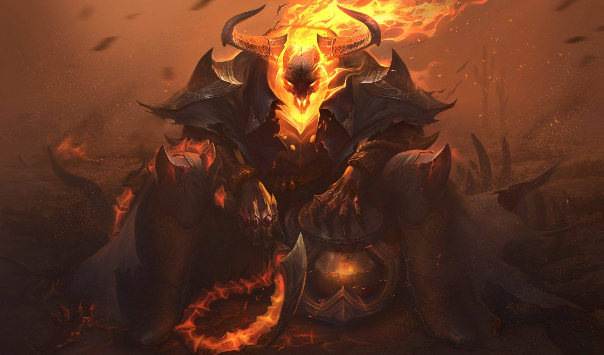
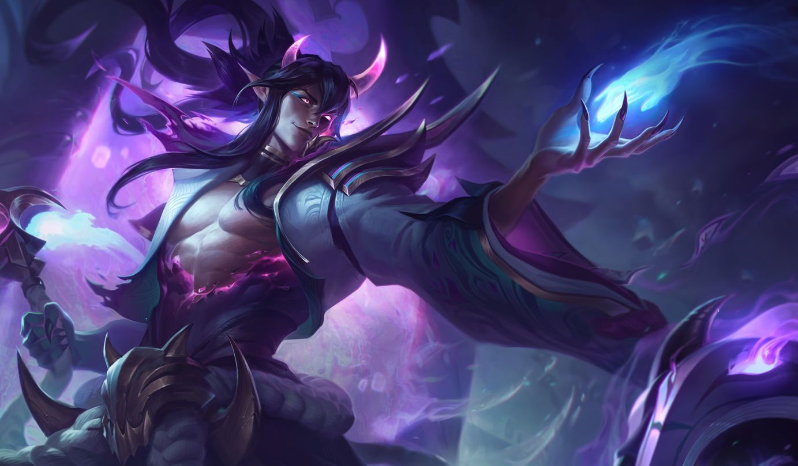

- Pasiva - Condensación de Almas: Gana fragmentos de alma al morir aliados cercanos, aumentando sus estadísticas.
- Q - Guardián de las Almas: Lanza un gancho que inmoviliza y arrastra a los enemigos.
- W - Llamado del Inframundo: Lanza una linterna que otorga un escudo y una velocidad extra a los aliados.
- E - Despliegue del Escudo: Empuja y ralentiza a los enemigos mientras protege a los aliados cercanos.
- R - El Juicio del Inframundo: Aterroriza a los enemigos en un área, otorgando beneficios a los aliados.